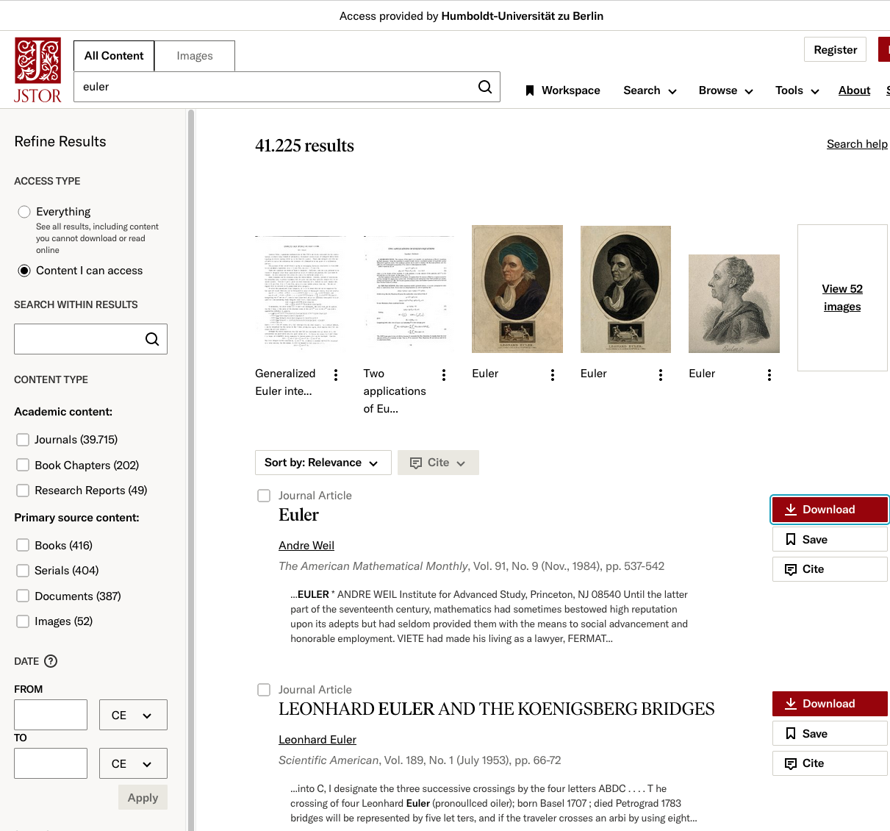
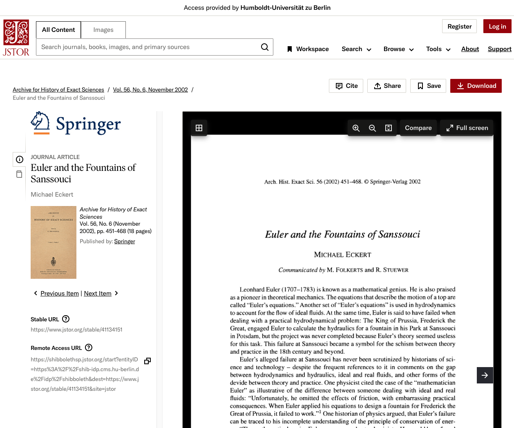

Scholarium
1 The universe of scholarly wisdom
As a universal scholar of immense influence Leonard Euler creates an steady source of inspiration. JSTOR records more than 40 000 publication in its collection. The search term “euler” displays the catalog of

1.2 Bibliography
Scholarly article can be cited from bibliographical databases. Bibliographical reference databases can be imported into the markdown document directly from a bibtex file. It is either locally stored or imported from the web. Opera-Bernoulli-Euler maintains its open access bibliographies published on Zenodo which can be computationally imported for this purpose.(Eckert 2002)
Eckert, Michael. 2002. “Euler and the Fountains of Sanssouci.” Archive for History of Exact Sciences 56 (6): 451–68. http://www.jstor.org/stable/41134151.
